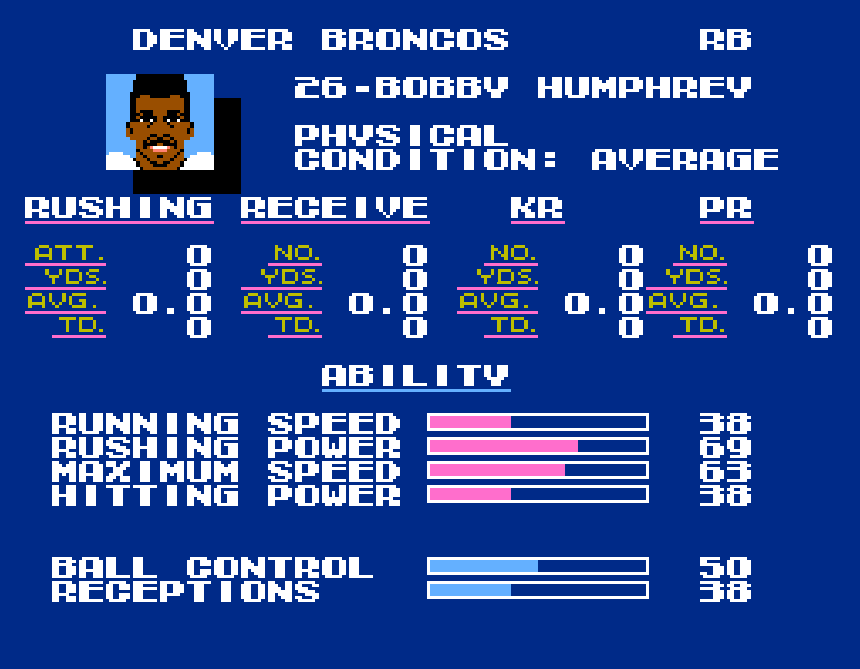

Most Rushing Yards:

- Season: 4095+ yards:
- Bo Jackson(Eff)
- Bobby Humphrey(Eff)
- Neal Anderson(Rew)

Most Rush Attempts:
- Season: 255+ attempts:
- Bo Jackson(Eff)
- Bobby Humphrey(Eff)
- Neal Anderson(Rew)
- Barry Sanders(Eff)

Highest Yards Per Attempt Average:
Most Rushing Touchdowns:
Quarterback - Most Rushing Yards:

Quarterback - Highest Yards Per Attempt Average:
Quarterback - Most Rushing Touchdowns:
Quarterback - Most Rushing Attempts: